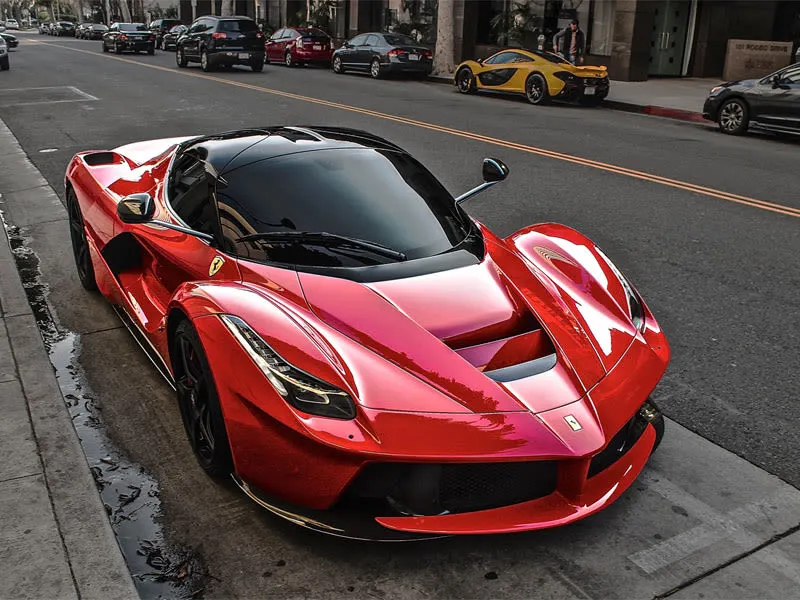
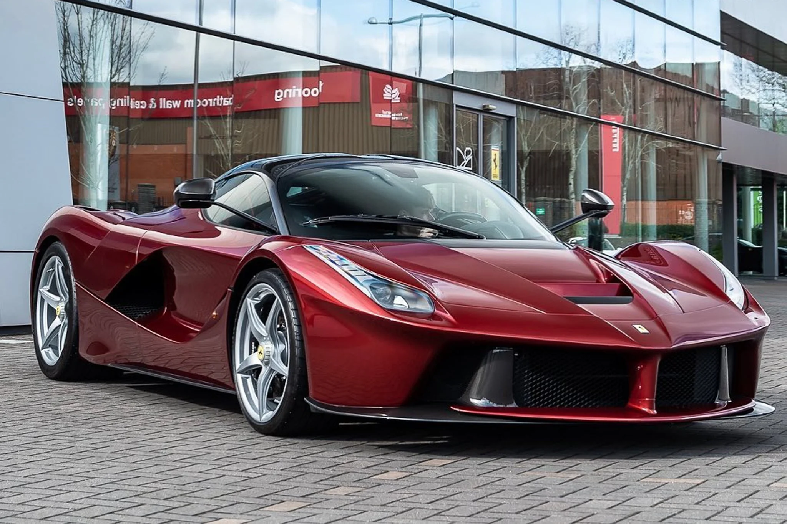

he 6262 cc V12 was a major new milestone in the Prancing Horse’s construction history. Until it was launched in 2013, no other naturally aspirated engine mounted in a road-going Ferrari had delivered such blistering performance. A maximum power output of 800 cv at maximum revs of 9250 rpm was a guarantee of extraordinary performance, fun behind the wheel and an instantly recognisable soundtrack. Unprecedented results that came thanks to painstaking work on improving volumetric, mechanical and combustion efficiency.


Impressively, the addition of the HY-KERS system has resulted not in an increase in dimensions, but a better balance between the car’s front and rear overhangs. Seen from the side, the car has a sharp, downward-sloping nose and a very low bonnet which emphasises its muscular wheelarches. The result is powerfully reminiscent of the gloriously exuberant forms of late-1960s Ferrari sports prototypes, such as the 330 P4 and the 312P. The ratio of the front and wheelarch dimensions are also very much in line with Ferrari tradition at its purest.LaFerrari - 2013 SupercarThe LaFerrari’s body has been given a sculptural treatment heavily influenced by its aerodynamics – its formal language is futuristic. The car’s elegantly sculpted forms lend a sense of huge power and aggression to the wheelarches, with surfaces flowing fluidly rearwards over the cockpit and beautifully resolved forms that give shape to the volumes themselves. This fluid surface treatment provides both the exceptional drag and downforce characteristics required by the aerodynamicists, as well as very efficiently channelling air to the components requiring cooling.